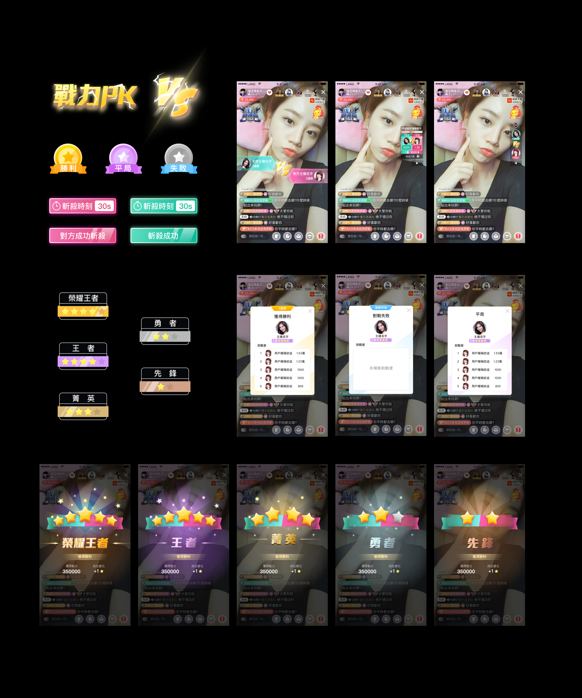
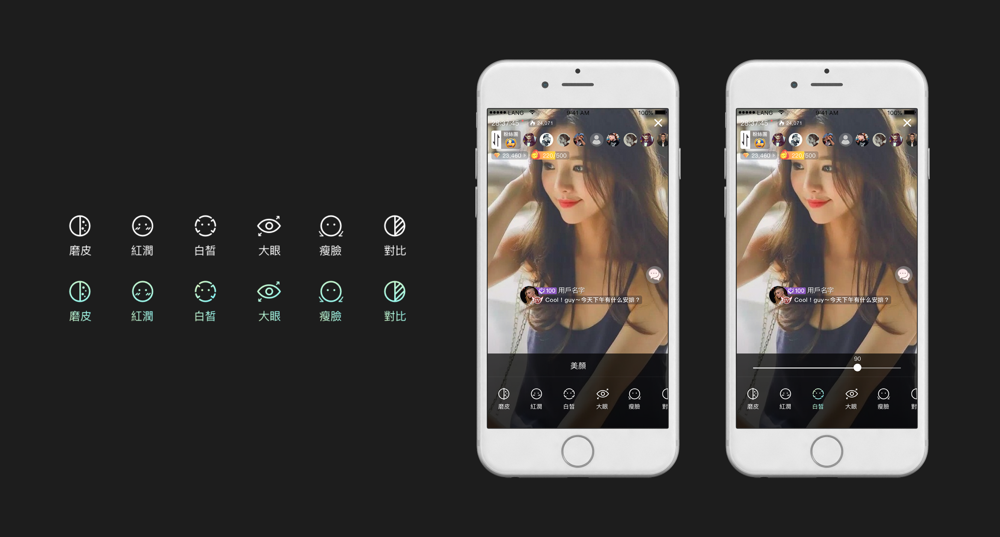
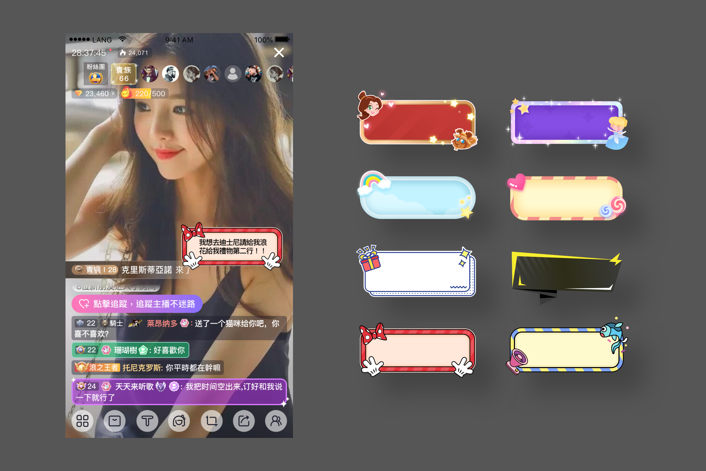

Lang Live is one of the leading live streaming platforms in Taiwan. The goal is to allow streamers to fulfill their dreams by sharing their talents, and viewers can cultivate a sense of self-worth through interaction.
Our team aims to make the platform easier for users to share more immediate live with their audience, and to create effective functions to facilitate interaction between streamers and viewers.
Here are some of the features I’ve worked on:
Role: Visual Designer
Type: Mobile App
Year: 2017.10 ~ 2019.09
Produced by Lang Live
Art Director: Zhi-Hao Shan
Visual Designer: Xin Xu, Yen-Len Chen
PK Function
'PK' function aims to facilitate interaction between streamers and audience.
By supporting streamers with gifts and helping them win the games, audience will cultivate a sense of self-worth through participating in games and collaborating with others.
My role was to create overall graphical UI design including determining the Visual Hierarchy, and eventually cooperate with animation designer to create effects and animations for each level and result.

Beauty Filter
Lang Live provides beauty filter for users when they are streaming.
I was responsible for re-designing the user interface of beauty filter and the new icons.

Bulletin Board
It allow streamers to set an announcement to viewers in live streaming room.
In order to fit different conditions and personal preferences, different styles and themes are provided.
I was responsible for GUI design of these bulletin boards, and establishing UI standards.

Live Streaming Hourly Chart
I re-designed the chart with the latest design system, a clean and simple style, to show the information clearly.